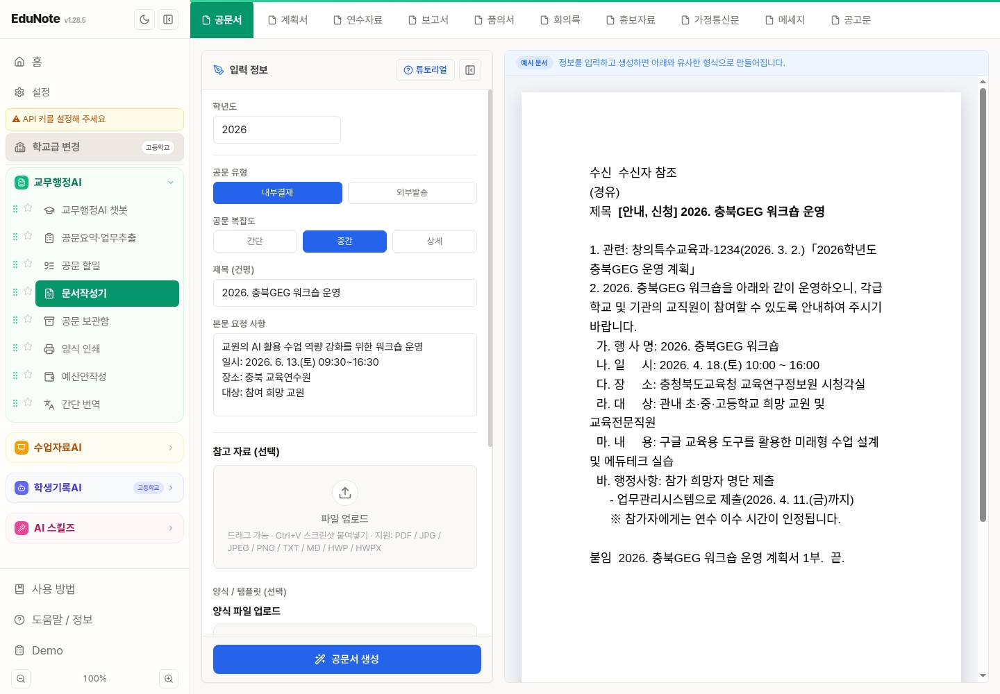
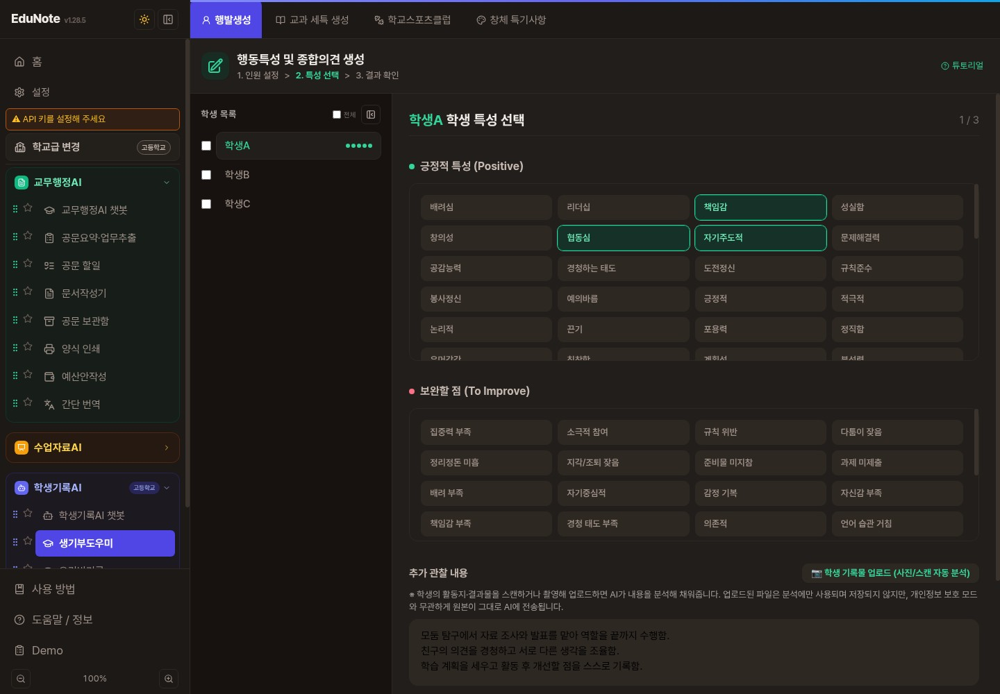
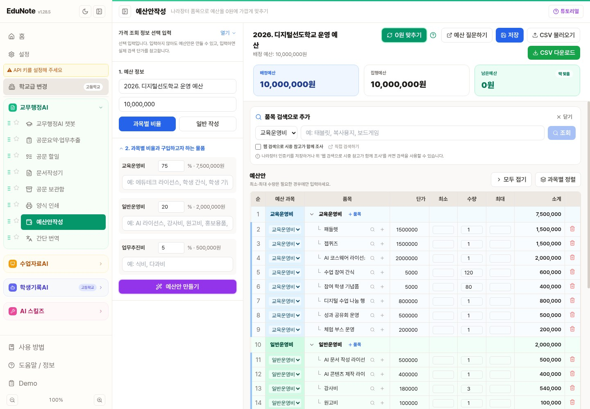
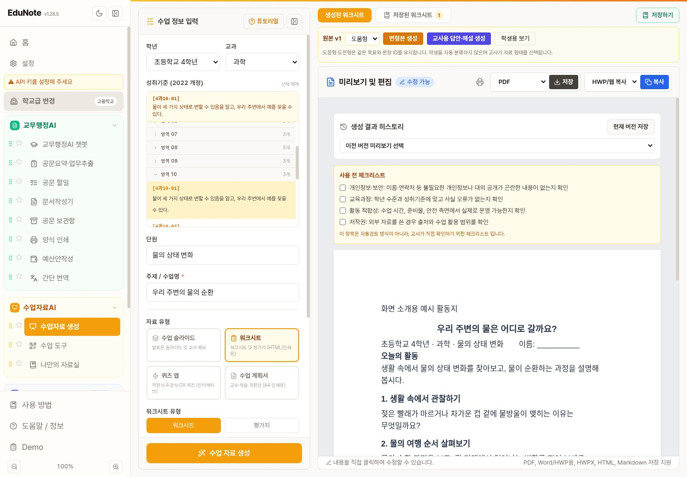
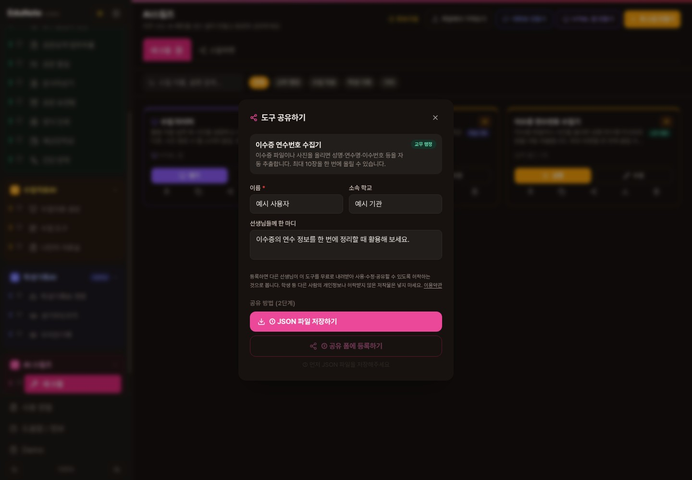
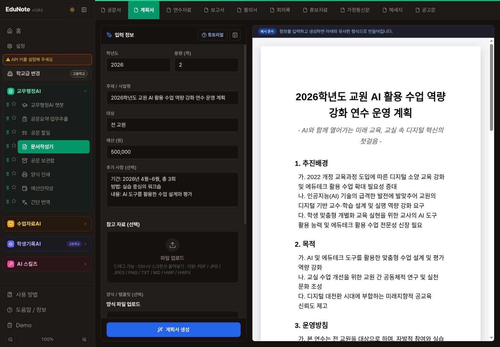

제목과 핵심 내용, 일시·대상을 입력해 공문 초안을 작성합니다.

학생의 특성과 관찰 내용을 모아 행동특성·교과 세특 초안을 작성합니다.

모둠 탐구에서 맡은 역할을 끝까지 책임감 있게수행하며, 친구의 의견을 경청하고 조율함.
총예산과 과목별 비율을 정하고 품목·단가·수량을 조정합니다.

학년, 교과, 성취기준과 주제에 맞는 활동지·평가지를 준비합니다.


